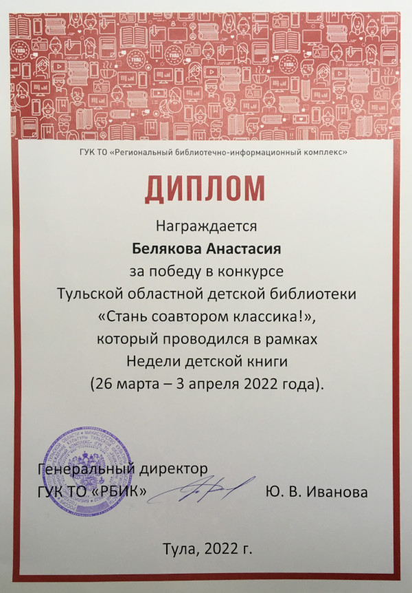

Краденое солнце
Фанфик1 по сказке К. И. Чуковского.
Предисловие
Солнце по небу гуляло
И за тучку забежало.
Глянул заинька в окно.
Стало заиньке темно.
А сороки-белобоки
Поскакали по полям,
Закричали журавлям:
Горе! Горе! Крокодил
Солнце в небе проглотил!
Но, как всем нам известно, сороки те ещё болтушки! А что же было на самом деле?
– Катастрофа! – дверь распахнулась и в комнату влетел Вульфрик. – Солнце исчезло!
– Как ни странно, я уже в курсе произошедшего. – Филиaмон, старейшина деревушки Вердеманс, оторвался от записей на листе пергамента. Мудрый филин глянул на пса своими янтарными глазами.
– Нужно послать весть Королеве эльфов – изрёк старейшина.
– Но кто же будет гонцом? – Вульфрик поправил соломенную шляпу и вопросительно посмотрел на филина. – Все так напуганы…
– А ты их успокой. – Филиaмон чуть склонил голову набок. – А гонцом должен быть тот, кто безупречно видит в темноте, способен быстро передвигаться… Как бы себялюбиво ни звучало, но речь идёт обо мне.
Фермер собрался было что-то сказать, но филин остановил его.
– Да, я сам полечу в Эльфларию. Буду очень благодарен, если ты останешься за главного на время моего отсутствия.
– Хорошо, Филиaмон. До скорого свидания.
– До скорого, Вульфрик. – филин взмахнул крыльями и вылетел в распахнутое окно.
Огни Вердеманса остались позади. Филиамон летел над полем. Было так темно, что хоть закрой глаза, хоть открой – разницы никакой. Но старейшина прекрасно ориентировался в кромешном мраке, воцарившимся повсюду.
Филин Филиамон жил уже триста лет, но ещё ни разу солнце не исчезало с небосклона.
“Три дня назад средь бела дня небосвод расколола молния. Не зря я тогда задумался. А теперь такое! Знать бы, чьих рук это дело. Как бы враг не был ужасен, ужаснее всего чувство неизвестности.” – из раздумий Филиамона выдернуло бурление воды.
“Значит, лес Светлый кончился, а внизу течёт Лазурная Журчала.”
Впереди появилось нежно-салатовое сияние. Оно становилось все ярче, ярче… И вот свечения приобрело очертания города. То была Эльфлария – город эльфов.
Филин влетел в раскрытое окно дворца и сел на подоконнике.
– Добрый день, Леонора, а вернее сказать ночь. Извини, что без стука.
– Филиамон! – женщина в зеленом платье подошла к окну.
–Здравствуй!
В изумрудных глазах королевы смешались радость и беспокойство.
– Но что привело тебя сюда?
– Вполне очевидно. – Филиамон кивнул в сторону окна. – Три дня назад ровно в полдень ударила молния, а сегодня с неба исчезло солнце. Ты не знаешь, кто за этим стоит? Я сомневаюсь, что это новое природное явление. – филин чуть усмехнулся. – здесь не обошлось без колдовства.
Леонора вздохнула.
– Правду более таить нельзя. Садись, а я расскажу, что произошло.
Королева эльфов села в кресло и устремила взор в окно.
– Три дня назад ко мне в приемную привели незнакомую пожилую женщину в чёрной накидке. Капюшон скрывал ее лицо и я не могла его разглядеть. От гостьи веяло холодом, а голос был скрипуч, как ветви старого дуба. Она назвалась Гардегоной и потребовала, чтобы я отдала корону и трон ей. Я ответила на это наглое требование отказом. Только я это сказала, как Гардегона скинула накидку. Под ней скрывалась ужасная змееподобная женщина с приплюснутым носом, жидкими седыми волосами и злобными глазами. Небо за окном резко потемнело, солнце закрыли свинцовые тучи. Из ладони колдуньи вырвалась ослепительная молния. Гардегона крикнула “Вы все пожалеете об этом!!!” И пропала. Пропали и тучи. Я не хотела волновать тебя и жителей Вердеманса, поэтому ничего Вам не сообщила. И судя по всему, напрасно…
Старейшина и королева посидели некоторое время молча.
– Значит, ты считаешь, что солнце убрала своей магией Гардегона? – Филиамон чуть сощурил глаза.
– Я почти уверена, что это ее рук дело. – королева встала и начала ходить по комнате. – Насколько я знаю, темное колдовство может победить лишь мужество, отвага, благородство.
– Но почему ты не можешь сразиться с колдуньей? – филин вопросительно взглянул на Леонору.
– Моя магия, магия эльфов, дана лишь на добрые дела. Мы не можем с помощью магической силы напасть, заставить чувствовать боль. Да и вряд ли это поможет. Как я уже сказала, Гардегону, можно одолеть только отвагой, благородством и добром. Против неё должен пойти истинный Рыцарь.
– Но кто же этот Рыцарь? Кто спасёт нас от вечного мрака и холода?
– Я. Я готов пойти против колдуньи и вернуть солнце на небосвод. – из-за кресла вышел статный юноша. Каштановые волосы были такими длинными, что спускались почти до пояса. А в ярко-зелёных глазах светилась решимость и отвага.
– Ричард?! – королева быстро подошла к юноше. – И долго ты тут находишься?
– Не много и не мало. Достаточно, чтобы узнать то, что мне нужно.
– Даже думать не смей об этом! – Филиамон никогда не видел королеву в таком гневе.
– Отправляйся в свою спальню и не выходи оттуда!
Ричард сощурил глаза, развернулся и вышел из приемной.
В коридорах пусто. Каждый его шаг отдавался звонким эхом. Внутри Ричарда бушевал ураган эмоций. Нет, он не собирается сдаваться!
Эльф зашёл в свои покои и громко захлопнул дверь. Сев на край кровати, он принялся сосредоточенно думать. Он услышал щелчок – дверь сама собой стала запираться на три замка, три засова и три щеколды. Но замки для него не преграда…
Ричард залез под кровать и отодвинул половицу. Под ней скрывалась средней глубины ниша. Туда он складывал свои находки, о которых никто и не подозревал.
В замке было множество потайных ходов. Их-то и исследовал юноша. Однажды в старом сундуке в темном подвале он нашёл плащ. Этот плащ имел магические свойства – тот, кто его наденет, становится невидимым и может проходить сквозь предметы.
Ричард взял из ниши волшебный плащ и выбрался из под кровати. У него в голове уже созрел план действий.
Магические огни за окнами потускнели. Стихли шаги придворных. Вот оно – время действовать!
Юноша достал плащ из под подушки. Серебристая ткань переливалась в тусклом свете. Ричард облачился в плащ и бесшумно прошёл сквозь стену. В коридорах дворца его встретила звенящая тишина. Ричард тихонько прошёл к картине с полевыми цветами в вазе. Юноша приложил палец к узору на вазе. Тут картина с тихим скрипом отъехала в сторону. В стене открылся проход. Эльф вошёл внутрь. Картина за его спиной закрыла проем. Юноша остался в темноте.
Сын Леоноры снял плащ. Из его ладони вылетел золотой шар света и поплыл по воздуху, освещая коридор. После нескольких минут ходьбы, Ричард остановился перед дубовой дверью. Юноша стал водить пальцем по шершавой поверхности. Там, где он провёл линию, на дереве оставался золотой след. Золотистые узоры сложились в изображение щита с выгравированным на нем солнцем. Дверь открылась.
Эльф вошёл в комнату. Посередине стоял стол, на котором расположились колбы, пробирки, сосуды. В углу приютился шкаф. В стороне от этого с потолка свисал гамак. Это была тайная мастерская Ричарда.
Юноша открыл дверцу шкафа. Там за одеждой скрывался ещё один коридор. На стенах висели разные вещи. Казалось, там было все: от засушенных трав до доспехов. Ричард взял лук и колчан со стрелами, снял с крюка сумку. Доложил туда солонины и повесил сумку на плечо. Движением руки он убрал световой шар.
Проход закончился. Эльф накинул плащ и прошёл сквозь дверь. Ричард оказался в дворцовом саду.
План удался. Но через сколько часов обнаружат его отсутствие? На такие мысли у юноши не было времени.
Из облаков вынырнул серп луны. Ричард побежал в сторону конюшни.
Остановившись у дверей конюшни, эльф огляделся по сторонам. Никого. Сняв плащ, он вошёл внутрь.
Юноша шёл между рядов стойл. Остановился он у предпоследнего справа. Там стоял белоснежный конь. Длинная золотая грива, стройные ноги, мускулистая грудь. Это был конь Ричарда.
– Нэко! – тихо позвал коня юноша.
Белый Нэко открыл глаза и негромко всхрапнул, приветствуя хозяина.
– Да, я тоже очень рад тебя видеть. – Ричард обнял коня за шею. – Тихо, не разбуди остальных.
Но конь уже понял, что необходимо вести себя как можно тише. Понимающе взглянув на эльфа, он тихо вышел из стойла.
Ни одна лошадь не фыркнула, ни одни уши не зашевелились, ни один хвост не взмахнул, пока Ричард и Нэко шли по конюшне. Они вышли наружу, бесшумно закрыв дверь.
Юноша убрал плащ в сумку и сел верхом на коня. Отыскав на небе Полярную звезду, он сориентировался.
– Вперёд, на запад, Нэко. – шепнул Ричард. И они помчались галопом. Все вперёд и вперёд. На запад, в край Тьмы.
Нэко скакал по лесу. Но этот лес был совсем не похож на леса в окрестностях Эльфларии. В родных и знакомых для Ричарда лесах пели птицы, цвели прекрасные цветы. Сквозь клейкие листья пробивался тёплый солнечный свет. Благодать царила в эльфийских лесах до исчезновения солнца!
В этом же лесу было темно, старые деревья скрипели и стонали. Создавать световой шар и поддерживать его с каждой минутой становилось все труднее и труднее. Вокруг витала неведомая, зловещая сила. По земле стелился туман.
Эльф с конем выехали на поляну. Юноша спешился, взглянул вверх. И ахнул.
По небу летел гигантский чёрный дракон. Из пасти чудовища вырывалось лиловое пламя. Сиреневые глаза с вертикальными зрачками не мигая смотрели вниз на Ричарда и Нэко. Дракон снижался. От взмахов огромных перепончатых крыльев поднялся сильнейший ветер. Деревья сгибались под порывами до самой земли.
– Уходи, Нэко! – крикнул эльф, натягивая тетиву лука. – Прячься!
Конь не двинулся с места. Он обеспокоенно глядел на юношу, желал помочь.
– Быстро!
Нэко встал на дыбы, развернулся и поскакал в чащу. Ричард посмотрел ему вслед, а затем взглянул на дракона. Их взгляды встретились. Монстр заревел и выдохнул струю огня. Началось сражение.
Уже на первой минуте боя, юноша понял, что дракона будет не просто победить. Пламя чудовища уничтожало все, чешуйчатая броня служила надежной защитой. Ричард потратил почти все стрелы, но дракон был невредим.
Эльф понял, что слабое место дракона – глаза. Прицелившись, он выстрелил. И…
Рёв монстра чуть не оглушил Ричарда. Дракон метался и сжигал все вокруг. Он ослеп, но был по прежнему опасен. Юноша схватил последнюю стрелу – последнюю надежду на победу. Выстрел…
Но эльфларец промахнулся.
Ричард притаился за камнем. Но он там не надолго. Сейчас, вот сейчас дракон дыхнёт на этот камень огнём и тогда все будет кончено. “Только бы Нэко успел убежать подальше…” – подумал эльф.
Дракон перестал рычать. Он оставался на прежнем месте, вертел головой, прислушивался. Втянул воздух, принюхался…
Громкое ржание, стук копыт. На поляну выбежал белоснежный конь. Золотая грива развевалась на ветру, хвост со свистом рассекал воздух. Нэко вернулся. Чёрный монстр обернулся. Конь встал на дыбы и ударил дракона передними ногами. Потом ещё раз. И…
Чудовище застыло и засветилось изнутри. Ослепительная вспышка…
Ричард открыл глаза. Дракон исчез.
Юноша подбежал к коню.
– Ты спас меня, Нэко!
Конь фыркнул.
– Да, ты прав. Надо спешить. – эльфларец сел на коня и поскакал в чащу.
Через два часа они выехали на опушку. Впереди простиралась степь – сухая, серая, безжизненная. Ближе к горизонту высились мрачные горы. А среди острых вершин расположился замок. Замок Гардегоны.
Нэко помчался в степь. За ним поднимались и вились в воздухе тучи пыли. Конь чуть сбавил темп. Вдруг Ричард услышал как кто-то скулит. Юноша спешился и подошёл к кустам, откуда доносился звук. Он раздвинул ветки.
В кустах лежала шестихвостая лиса с серебристой шерстью. Лиса зализывала нежно-розовым языком рану на передней лапе. Эльфларец не сразу заметил, что за спиной у неё была пара крыльев. Это была кицунэ.
Эльф осторожно подошёл к раненной. Лиса подняла глаза и настороженно посмотрела на него.
– Я не причиню тебе вреда. Я хочу помочь. – тихо сказал Ричард.
Кицунэ опустила взгляд и протянула раненную лапу. Юноша внимательно осмотрел рану.
– Ничего страшного. Я постараюсь исцелить твою лапу.
Ричард достал из сумки целебные травы, разложил их на большом камне. Поднял с земли маленький камень и с его помощью растолок стебель полыни. Добавил девять лепестков цикория и две капли сока остролиста. Капнул на ранку немного приготовленной настойки и замотал лапу.
– Вот так. Где-то через недельку ты поправишься. – эльф поднялся с колен и перекинул сумку через плечо.
– Спасибо! – кицунэ села и благодарно взглянула на эльфа.
– Не за что.
“Как я мог забыть, что кицунэ наделены даром речи!” – охнул про себя Ричард.
– Впереди тебя ждёт битва с колдуньей Гардегоной. – сказала шестихвостая лиса.
– Да.
– Все твои стрелы закончились, а магию невозможно победить голыми руками. Я дарую тебе меч, рассекающий камень и щит, отбивающий молнии.
Из воздуха появился сверкающий серебром меч. Лезвие было украшено витиеватыми узорами, а в рукояти блестели драгоценные камни. Следом появился щит с выгравированным на нем львом.
– Эти два предмета помогут тебе победить Гардегону. Но главное твоё преимущество над колдуньей в том, что ты смел, мужествен и добр. Ты - истинный Рыцарь, ты – тот, кто победит тьму. Настал твой час, Ричард, сын Леоноры. – с этими словами кицунэ взмахнула крыльями и поднялась в высь. Она становилась все меньше, меньше, пока не растаяла в вышине.
Эльф проводил лисицу взглядом. А потом взял щит, повесил меч на пояс и вышел к Нэко. Он сел на белоснежного коня и сказал громко и уверенно:
– Вперёд, Нэко. Вперёд, к замку Гардегоны.
Ричард и Нэко стояли у подножия горы.
– Останься здесь, Нэко. В замок колдуньи я пойду один. Прощай! – юноша обнял коня за шею.
Эльфларец развернулся и встал ногой на уступ. Ухватился рукой за выступ, поднялся чуть выше… Подниматься было тяжело, очень тяжело. Но Ричард стиснув зубы, продолжал восхождение.
И вот он на вершине горы. Прямо перед логовом колдуньи. Эльф положил руку на рукоять меча. И меч придал ему сил, вселил уверенность. Он сможет победить. Юноша поднял меч. Клинок прошёл через сталь ворот, как нож сквозь масло. Ричард ворвался внутрь замка.
Он быстро бежал по коридорам. Из-за углов, из закоулков выскакивали чудовища. Но завидев сверкающий меч, нечисть приходила в ужас. Перед эльфларцем предстала дверь. Он чувствовал, знал, что именно за этой дверью скрывается колдунья. Ричард распахнул дверь и вбежал в залу.
Он не ошибся. У окна стояла старая, сморщенная старуха – Гардегона. Она атаковала сразу, без предупреждений. Молния из ее ладони полетела в эльфа, но тот укрывался щитом. Новую вспышку отразил меч. Эльфларец сражался, собрав всю свою силу, весь свой опыт. Карга подошла близко к окну. С громким криком Ричард схватил Гардегону и сбросил вниз в пропасть. Небо расколола молния и все стихло.
Эльф только сейчас понял, как устал.
Отойдя от окна, он подошёл к сундуку, стоявшему в углу. Удар – и замок упал на пол. Крышка сундука распахнулась и зала озарилась ярчайшим, ослепительным светом.
Ричард зажмурился, а когда открыл глаза, то произошло чудо – тёмное небо поголубело и засветило солнце.
Юноша выбежал из замка.
Начался новый день!
Март 2022 г.

-
Фанфик – любительское сочинение по мотивам популярных оригинальных произведений (книг, фильмов, мультфильмов). ↩